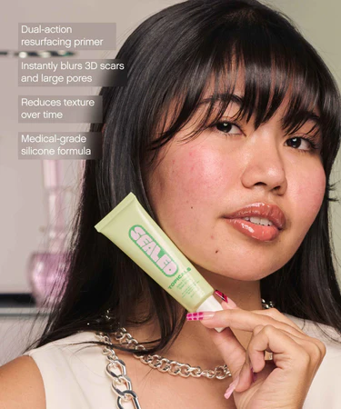
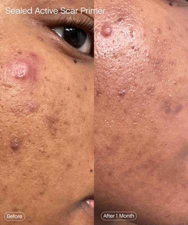
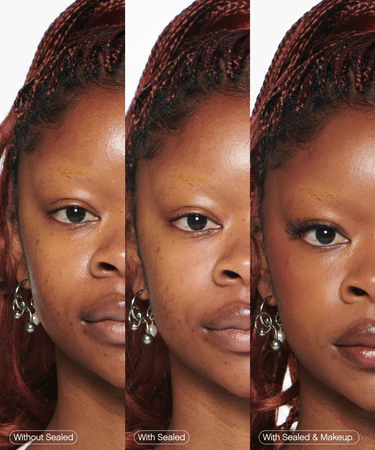
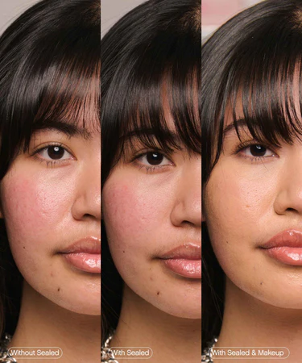
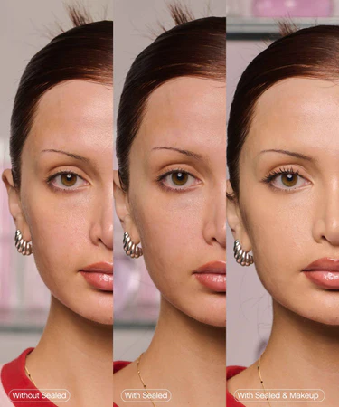
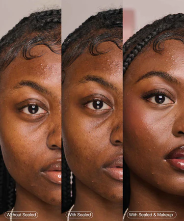
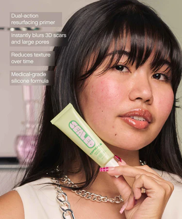
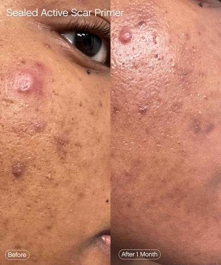
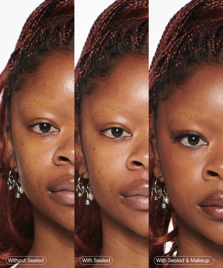
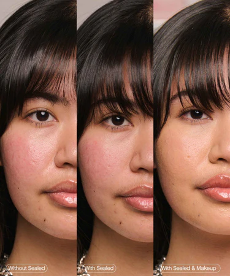
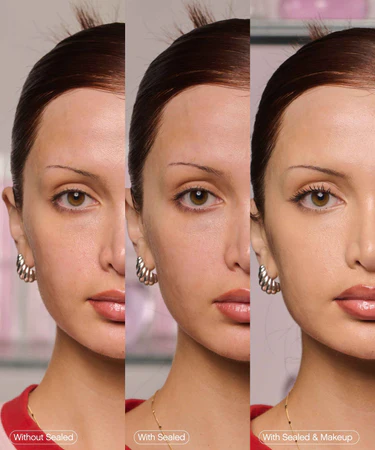
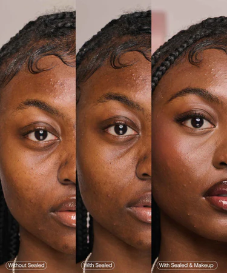
Sealed Scar Filling Primer
$34
For Dark Spots and Discoloration
28 ml / 1 fl oz
Pitted acne scars, large pores, or textured skin?
Meet Sealed, the active primer that visibly fills in pitted acne scars and large pores while effectively resurfacing the skin's texture over time.
Perfect under makeup or on a fresh face, our cutting-edge hybrid formula works as a blurring, silk prime while its clinically proven active ingredients reduce the appearance of scar depth over time. #SmoothSealedDelivered
Product Highlights
- Visibly fills in scars
- Primes for Makeup
- Breathable and Translucent
- Resurfaces skin texture
- Speeds up scar recovery
- Non-comedogenic
In just 8 weeks...
- 100% noticed a decrease in the look of post-acne marks
- 97% of participants noticed a decrease in the look of their indented acne scars
- 100% noticed that their skin texture felt more smooth and even

How To Use
To Prime Before Makeup: After applying moisturizer and sunscreen, dab a small amount of Sealed onto pitted scars or enlarged pores. Let product sit for 30 seconds before applying makeup.
To Wear Without Makeup: Dab a small amount into pitted scars or enlarged pores. Let product sit for 30 seconds, then follow with moisturizer and sunscreen.
Pro Tip: Do not massage in product, it is intended to remain on the surface in order to fill in and smooth uneven texture. For best results, use daily.
Full Ingredients List
Isododecane, Dimethicone Crosspolymer, Polyglyceryl-10 Laurate, Retinol, Palmitoyl Pentapeptide-4, Papain, Allium Cepa (Onion) Bulb Extract, Salicylic Acid, Glycerin, Phospholipids, Water/Aqua/Eau, Caprylic/Capric Triglyceride, Benzoic Acid, Sorbic Acid, Chlorphenesin, Phenoxyethanol, Mica (CI 77019).
Shipping and Delivery
Please note your order will take 1-3 days to process.
Domestic Shipping: 2-8 business days
Domestic Express: 1-3 business days
Int'l Shipping - 6-8 business days
Click here for our full shipping policy.
Key Ingredients
- Encapsulated Retinol: An highly advance, costom-blended gentle delivery system allows for highly active retinol, used at lower concentrations for light resurfacing.
- Medical-Grade Silicone : Helps create the optimal occulsive healing environment.
- Biomimetic Peptide : This peptide gently reduces the appearance of indented scars and smooths skin by stimulating the regeneration process.
- Papain : Enzyme that softens the look of skin texture by gently resurfacing.
You might also like...


Frequently Asked Questions
Reviews
99% would reccomend this product
E. M.
Verified Buyer
Yes, I recommend this product
Works Great on my pitted acne scars. This is not a paid promotion! A real customer.
2 weeks ago
Mary
AL, United States
Verified Buyer
Yes, I recommend this product
I love this primer .. going to try other products from Topicals.
4 months ago
mary
Verified Buyer
No, I do not recommend this product
this product did absolutely NOTHINGGG for my acne scars or my pores!!! all is the same baby plus the texture of the product is unique. it almost felt like i was rubbing a fake jelly-like of product on myself. dont recommend personally. waste of time and money
6 months ago
Tiffany P.
Verified Buyer
Yes, I do recommend this product
In LOVE!!!!
9 months ago